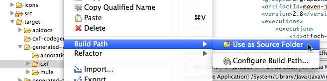

Creating a Connector for a SOAP Service Via the CXF Client
This example demonstrates how to build a connector for a SOAP service, given a WSDL file. The client is built using Apache CXF, which can generate most of the required code for you from the WSDL metadata.
Notes:
-
From Mule 3.5.2 and later, whenever you create a SOAP connector, Anypoint Connector DevKit prompts you for a required WSDL file from either a file or a folder. The WSDL creates a connector automatically.
-
This document provides two ways of developing a SOAP connector – Creating a SOAP Connector creates a connector using the Mule 3.5.2 and later WSDL-to-connector approach. The second approach uses WSDL2Java and starts with CXF-Based Connector Architecture.
-
After creating a SOAP connector, you can augment the connector you create with Studio to add features using the remainder of the sections in this document.
Prerequisites
This document assumes you are familiar with SOAP Web Services, including WSDL definitions. Important concepts and terms on WSDL are available from the WSDL specifications at the W3C web site.
This document further assumes you have some understanding of CXF and WSDL2Java and how they can be used to build Web Service clients. For background on these topics, see Apache CXF: How do I develop a client? and especially Apache CXF: Developing a Consumer with CXF. This document also assumes you have created a Maven project for a connector as described in Creating an Anypoint Connector Project.
Creating a SOAP Connector
Note: This section shows you how to create a starting connector from a WSDL. The remainder of this document builds on the information to create a more useful connector.
To create a SOAP connector:
-
Install Java 7, Maven, Studio, and the Studio DevKit Plugin. See Setting Up Your Development Environment.
-
You can create the SOAP connector described in this example using the following WSDL. As of Mule 3.5.2 and later, you can create a SOAP connector directly from a WSDL. Save this WSDL as the
sunsetriseservice.wsdlfile on your computer. -
In Anypoint Studio, click File > New > Anypoint Connector Project, specify the connector name as SunsetRise, set the Type to SOAP, and click the browse button (…) to locate the WSDL you stored in Step 2. After you locate the WSDL, click Finish:
-
Install your connector in Studio to test it, and to prepare for when you want to share your connector with Mule Project users. Right-click your project name in Studio’s Package Explorer, and click Anypoint Connector > Install or Update:
-
Click Next, Next, accept the license agreement, and Finish. Click OK to install unsigned content, and restart Studio. You can provide a signed certificate for connectors before you package your final connector and thus avoid the security warning.
-
Create a test project that uses your connector by clicking File > New > Mule Project.
-
Click Message Flow, search for HTTP, and drag the HTTP connector to the canvas.
-
In the Connector Configuration field, click the green Plus sign. From the new HTTP Listener Configuration window, click OK to accept the default settings.
-
Search for "sunset" and drag the SunsetRise connector to the canvas:
-
Double-click the SunsetRise connector icon to configure. In the Connector Configuration field, click the green plus symbol, click OK, and in the Operation field, click Sunrise and Sunset Times. Configure the fields. Information on the fields and how to view the results is provided later in this document.
Now that you have created and installed your connector, you can update the connector by:
-
Updating the WSDL and creating a new connector using the process you just completed.
-
Updating the connector using the instructions that follow.
<?xml version="1.0" encoding="utf-8"?>
<wsdl:definitions xmlns:tm="http://microsoft.com/wsdl/mime/textMatching/" xmlns:soapenc="http://schemas.xmlsoap.org/soap/encoding/" xmlns:mime="http://schemas.xmlsoap.org/wsdl/mime/" xmlns:tns="http://www.webserviceX.NET/" xmlns:soap="http://schemas.xmlsoap.org/wsdl/soap/" xmlns:s="http://www.w3.org/2001/XMLSchema" xmlns:soap12="http://schemas.xmlsoap.org/wsdl/soap12/" xmlns:http="http://schemas.xmlsoap.org/wsdl/http/" targetNamespace="http://www.webserviceX.NET/" xmlns:wsdl="http://schemas.xmlsoap.org/wsdl/">
<wsdl:types>
<s:schema elementFormDefault="qualified" targetNamespace="http://www.webserviceX.NET/">
<s:element name="GetSunSetRiseTime">
<s:complexType>
<s:sequence>
<s:element minOccurs="1" maxOccurs="1" name="L" type="tns:LatLonDate" />
</s:sequence>
</s:complexType>
</s:element>
<s:complexType name="LatLonDate">
<s:sequence>
<s:element minOccurs="1" maxOccurs="1" name="Latitude" type="s:float" />
<s:element minOccurs="1" maxOccurs="1" name="Longitude" type="s:float" />
<s:element minOccurs="1" maxOccurs="1" name="SunSetTime" type="s:float" />
<s:element minOccurs="1" maxOccurs="1" name="SunRiseTime" type="s:float" />
<s:element minOccurs="1" maxOccurs="1" name="TimeZone" type="s:int" />
<s:element minOccurs="1" maxOccurs="1" name="Day" type="s:int" />
<s:element minOccurs="1" maxOccurs="1" name="Month" type="s:int" />
<s:element minOccurs="1" maxOccurs="1" name="Year" type="s:int" />
</s:sequence>
</s:complexType>
<s:element name="GetSunSetRiseTimeResponse">
<s:complexType>
<s:sequence>
<s:element minOccurs="1" maxOccurs="1" name="GetSunSetRiseTimeResult" type="tns:LatLonDate" />
</s:sequence>
</s:complexType>
</s:element>
</s:schema>
</wsdl:types>
<wsdl:message name="GetSunSetRiseTimeSoapIn">
<wsdl:part name="parameters" element="tns:GetSunSetRiseTime" />
</wsdl:message>
<wsdl:message name="GetSunSetRiseTimeSoapOut">
<wsdl:part name="parameters" element="tns:GetSunSetRiseTimeResponse" />
</wsdl:message>
<wsdl:portType name="SunSetRiseServiceSoap">
<wsdl:operation name="GetSunSetRiseTime">
<wsdl:documentation xmlns:wsdl="http://schemas.xmlsoap.org/wsdl/">Get Sunset and Sunrise time for any location in the world<br><b>Longitude:</b>Positive in Western Hemisphere,Negative in Eastern Hemisphere<br><b>Latitude:</b>Positive in Northern Hemisphere,Negative in Southern Hemisphere</wsdl:documentation>
<wsdl:input message="tns:GetSunSetRiseTimeSoapIn" />
<wsdl:output message="tns:GetSunSetRiseTimeSoapOut" />
</wsdl:operation>
</wsdl:portType>
<wsdl:portType name="SunSetRiseServiceHttpGet" />
<wsdl:portType name="SunSetRiseServiceHttpPost" />
<wsdl:binding name="SunSetRiseServiceSoap" type="tns:SunSetRiseServiceSoap">
<soap:binding transport="http://schemas.xmlsoap.org/soap/http" />
<wsdl:operation name="GetSunSetRiseTime">
<soap:operation soapAction="http://www.webserviceX.NET/GetSunSetRiseTime" style="document" />
<wsdl:input>
<soap:body use="literal" />
</wsdl:input>
<wsdl:output>
<soap:body use="literal" />
</wsdl:output>
</wsdl:operation>
</wsdl:binding>
<wsdl:binding name="SunSetRiseServiceSoap12" type="tns:SunSetRiseServiceSoap">
<soap12:binding transport="http://schemas.xmlsoap.org/soap/http" />
<wsdl:operation name="GetSunSetRiseTime">
<soap12:operation soapAction="http://www.webserviceX.NET/GetSunSetRiseTime" style="document" />
<wsdl:input>
<soap12:body use="literal" />
</wsdl:input>
<wsdl:output>
<soap12:body use="literal" />
</wsdl:output>
</wsdl:operation>
</wsdl:binding>
<wsdl:binding name="SunSetRiseServiceHttpGet" type="tns:SunSetRiseServiceHttpGet">
<http:binding verb="GET" />
</wsdl:binding>
<wsdl:binding name="SunSetRiseServiceHttpPost" type="tns:SunSetRiseServiceHttpPost">
<http:binding verb="POST" />
</wsdl:binding>
<wsdl:service name="SunSetRiseService">
<wsdl:port name="SunSetRiseServiceSoap" binding="tns:SunSetRiseServiceSoap">
<soap:address location="http://www.webservicex.net/sunsetriseservice.asmx" />
</wsdl:port>
<wsdl:port name="SunSetRiseServiceSoap12" binding="tns:SunSetRiseServiceSoap12">
<soap12:address location="http://www.webservicex.net/sunsetriseservice.asmx" />
</wsdl:port>
<wsdl:port name="SunSetRiseServiceHttpGet" binding="tns:SunSetRiseServiceHttpGet">
<http:address location="http://www.webservicex.net/sunsetriseservice.asmx" />
</wsdl:port>
<wsdl:port name="SunSetRiseServiceHttpPost" binding="tns:SunSetRiseServiceHttpPost">
<http:address location="http://www.webservicex.net/sunsetriseservice.asmx" />
</wsdl:port>
</wsdl:service>
</wsdl:definitions>CXF-Based Connector Architecture
Apache CXF is a complex framework that enables many different models for accessing Web services. The focus here is on a straightforward path that should produce results for any service for which you have a WSDL. For more details on the full range of possible client models using CXF, see the Apache CXF documentation for building clients, especially Developing a Consumer with CXF.
The model for development is:
-
Create the major classes that make up the connector
-
Add authentication-related functionality to the
@Connectorclass -
Apply a test-driven development process to add individual operations to the connector
Follow the steps in this document to build the connector client, starting with the WSDL that describes the service.
Starting with a new connector project (possibly with authentication logic built in):
-
Obtain a WSDL file for the service and add it to the project.
-
Run WSDL2Java from Maven to generate CXF stub client code that can call the service operations.
-
Write a proxy class that wraps the stub client.
-
Build a DevKit Connector class whose methods call methods on the proxy class.
The architecture is:
Example Service: SunSetRiseService
The web service for the demo is the SunSetRise Web service at WebserviceX.net.
Example files are available in the attached CxfExampleFiies.zip file for the sections of this document that follow.
The request and response are both represented by an XML document that specifies:
-
Your location in latitude and longitude. Note that you need use negative latitude values for the Southern Hemisphere and negative longitude values for the Eastern Hemisphere. Coordinates are in decimal rather than degrees, minutes and seconds.
-
A target date for providing sunrise and sunset times.
-
The time zone of the final results (offset from GMT).
Here is a sample request message of GetSunSetRiseTime in SOAP 1.1 to get sunrise and sunset times:
<soap:Envelope xmlns:soap="http://www.w3.org/2003/05/soap-envelope"
xmlns:web="http://www.webserviceX.NET/">
<soap:Header/>
<soap:Body>
<web:GetSunSetRiseTime>
<web:L>
<web:Latitude>0.0</web:Latitude>
<web:Longitude>0.0</web:Longitude>
<web:TimeZone>0</web:TimeZone>
<web:Day>21</web:Day>
<web:Month>3</web:Month>
<web:Year>2015</web:Year>
</web:L>
</web:GetSunSetRiseTime>
</soap:Body>
</soap:Envelope>The SunSetTime and SunRiseTime elements are omitted because those are computed by the service. The response includes the populated elements.
Here is a sample response:
<?xml version="1.0" encoding="utf-8"?>
<soap:Envelope
xmlns:soap="http://www.w3.org/2003/05/soap-envelope"
xmlns:xsi="http://www.w3.org/2001/XMLSchema-instance"
xmlns:xsd="http://www.w3.org/2001/XMLSchema">
<soap:Body>
<GetSunSetRiseTimeResponse
xmlns="http://www.webserviceX.NET/">
<GetSunSetRiseTimeResult>
<Latitude>0</Latitude>
<Longitude>0</Longitude>
<SunSetTime>17.9877033</SunSetTime>
<SunRiseTime>5.87441826</SunRiseTime>
<TimeZone>0</TimeZone>
<Day>21</Day>
<Month>3</Month>
<Year>2015</Year>
</GetSunSetRiseTimeResult>
</GetSunSetRiseTimeResponse>
</soap:Body>
</soap:Envelope>Note that SunSetTime and SunRiseTime are in decimal rather than hours, minutes and seconds.
Creating the CXF Stub Client from WSDL
All SOAP APIs provide a WSDL file that defines how and at what endpoint and ports a SOAP Web service can be called, what operations and parameters it expects, and what data types (simple or complex) the operations return.
CXF includes the wsdl2java utility that can generate Java stub client code to call any method on the service, and marshal and unmarshal request parameters and responses as Java objects for further processing. This generated stub client is the core of your connector.
The sections below describe the steps to create the stub client and add it to your project.
Preparations
You can access your WSDL from a URL or download locally to your computer. If you download to your computer, make sure you have all the files required to build your connector.
See Setting Up Your API Access for steps that may be required to gain access to other APIs, including how to get access to the WSDL file.
Step 1: Adding the WSDL File to Your Project
In your project, under /src/main/resources, create a subdirectory called wsdl and copy your WSDL there.
For this example, copy the WSDL to /src/main/resources/wsdl/sunsetriseservice.wsdl.
Note: If you download your WSDL, make sure any required schema files are also local.
Step 2: Updating Your POM File
The default POM file (where Maven stores all instructions for the build) does not include properties, dependencies and Maven plugins specific to accessing SOAP using CXF. You must add these manually into your pom.xml file.
Adding WSDL and CXF Properties to the POM
The first block of code adds several properties to your POM. These identify the CXF version to use, set the package name, and specify the location of the WSDL in the project and in the connector JAR file.
<!-- Maven should build the update site Zip file -->
<devkit.studio.package.skip>false</devkit.studio.package.skip>
<!-- CXF version info -->
<cxf.version>2.5.9</cxf.version>
<cxf.version.boolean>2.6.0</cxf.version.boolean>
<!-- Package name, WSDL file path and location in the JAR -->
<connector.package>
org.tutorial.sunsetrise.definition
</connector.package>
<connector.wsdl>
${basedir}/src/main/resources/wsdl/sunsetriseservice.wsdl
</connector.wsdl>
<connector.wsdlLocation>
classpath:wsdl/sunsetriseservice.wsdl
</connector.wsdlLocation>Add these elements within the <properties> element, and update connector.wsdl and connector.wsdlLocation to reflect the name of your WSDL file.
Adding a Maven Dependency on CXF
The second POM update adds a dependency on the CXF module included in Mule:
<dependency>
<groupId>org.mule.modules</groupId>
<artifactId>mule-module-cxf</artifactId>
<version>${mule.version}</version>
<scope>provided</scope>
</dependency>Copy and paste this block of code inside the <dependencies> tag, near the end of the file, alongside the other <dependency> elements that are already listed. You do not have to edit this block, just add it.
Adding a Maven Plugin for wsdl2java
The third POM update is a wsdl2java Maven plugin, that generates Java classes from the WSDL file. Paste this plugin element in the <plugins> element inside the <build> element. (Make sure you don’t place it in the <pluginManagement> element.)
You do not have to edit this block, just add it.
<plugin>
<groupId>org.apache.cxf</groupId>
<artifactId>cxf-codegen-plugin</artifactId>
<version>${cxf.version}</version>
<executions>
<execution>
<!-- Note that validate phase is not the usual phase to
run WSDL2Java. This is done because DevKit requires the
class be generated so it can be used in generate-sources
phase by DevKit. The DevKit generates code from annotations
etc. and references the WSDL2Java generated output. -->
<phase>validate</phase>
<goals>
<goal>wsdl2java</goal>
</goals>
<configuration>
<wsdlOptions>
<wsdlOption>
<!-- WSDL File Path -->
<wsdl>${connector.wsdl}</wsdl>
<!-- pick up the WSDL from within the JAR -->
<wsdlLocation>${connector.wsdlLocation}</wsdlLocation>
<autoNameResolution>true</autoNameResolution>
<extraargs>
<!-- Package Destination -->
<extraarg>-p</extraarg>
<!-- Name of the output package specified
that follows the -p argument to wsdl2java. -->
<extraarg>
${connector.package}
</extraarg>
<!-- DataMapper compatibility requires that
boolean getters and setters follow naming
conventions for other getters and setters. -->
<extraarg>-xjc-Xbg</extraarg>
<extraarg>-xjc-Xcollection-setter-injector</extraarg>
</extraargs>
</wsdlOption>
</wsdlOptions>
</configuration>
</execution>
</executions>
<dependencies>
<!-- Boolean Getters -->
<dependency>
<groupId>org.apache.cxf.xjcplugins</groupId>
<artifactId>cxf-xjc-boolean</artifactId>
<version>${cxf.version.boolean}</version>
</dependency>
<!-- Collection Setters -->
<dependency>
<groupId>net.java.dev.vcc.thirdparty</groupId>
<artifactId>collection-setter-injector</artifactId>
<version>0.5.0-1</version>
</dependency>
</dependencies>
</plugin>Notes:
-
The
connector.package,connector.wsdl, andconnector.wsdlLocationproperties you added are referenced here. -
The xjc-Xbg argument is included to enable WSDL2Java to generate getters and setters that follow the naming convention of other Java bean getters and setters. This is required for compatibility with DataSense and DataMapper.
-
The WSDL2Java code generation is performed during the Maven validate phase. The generated code from WSDL2Java is required in the generate-sources phase of the build process, where DevKit code generation references these sources.
The following is the full pom.xml file contents with the required changes for this tutorial:
<project xmlns="http://maven.apache.org/POM/4.0.0" xmlns:xsi="http://www.w3.org/2001/XMLSchema-instance"
xsi:schemaLocation="http://maven.apache.org/POM/4.0.0 http://maven.apache.org/xsd/maven-4.0.0.xsd">
<modelVersion>4.0.0</modelVersion>
<groupId>org.mule.modules</groupId>
<artifactId>sunsetrise-connector</artifactId>
<version>1.0.0-SNAPSHOT</version>
<packaging>mule-module</packaging>
<name>Mule Sunsetrise Anypoint Connector</name>
<parent>
<groupId>org.mule.tools.devkit</groupId>
<artifactId>mule-devkit-parent</artifactId>
<version>3.6.2</version>
</parent>
<properties>
<cxf.version.boolean>2.6.0</cxf.version.boolean>
<!-- WSDL file path and location in the JAR -->
<connector.wsdl>
${basedir}/src/main/resources/wsdl/sunsetriseservice.wsdl
</connector.wsdl>
<connector.wsdlLocation>
classpath:wsdl/sunsetriseservice.wsdl
</connector.wsdlLocation>
<connector.package>
org.tutorial.sunsetrise.definition
</connector.package>
<category>Community</category>
<licensePath>LICENSE.md</licensePath>
<devkit.studio.package.skip>false</devkit.studio.package.skip>
</properties>
<build>
<plugins>
<plugin>
<groupId>org.codehaus.mojo</groupId>
<artifactId>build-helper-maven-plugin</artifactId>
<version>1.7</version>
<executions>
<execution>
<id>add-source</id>
<phase>generate-sources</phase>
<goals>
<goal>add-source</goal>
</goals>
<configuration>
<sources>
<source>${basedir}/target/generated-sources/cxf</source>
</sources>
</configuration>
</execution>
</executions>
</plugin>
<!-- CXF Code generation -->
<plugin>
<groupId>org.apache.cxf</groupId>
<artifactId>cxf-codegen-plugin</artifactId>
<version>${cxf.version}</version>
<executions>
<execution>
<phase>validate</phase> <!-- This is so it work with the Devkit -->
<goals>
<goal>wsdl2java</goal>
</goals>
<configuration>
<wsdlOptions>
<wsdlOption>
<!-- WSDL File Path -->
<wsdl>${connector.wsdl}</wsdl>
<!-- Pick up the WSDL from within the JAR -->
<wsdlLocation>${connector.wsdlLocation}</wsdlLocation>
<autoNameResolution>true</autoNameResolution>
<extendedSoapHeaders>false</extendedSoapHeaders>
<extraargs>
<!-- For DataMapper compatibility, force
boolean getters and setters to follow
naming convention for other getters and
setters. -->
<extraarg>-xjc-Xbg</extraarg>
<extraarg>-xjc-Xcollection-setter-injector</extraarg>
<extraarg>-p</extraarg>
<extraarg>${connector.package}</extraarg>
</extraargs>
</wsdlOption>
</wsdlOptions>
</configuration>
</execution>
</executions>
<dependencies>
<!-- Boolean Getters -->
<dependency>
<groupId>org.apache.cxf.xjcplugins</groupId>
<artifactId>cxf-xjc-boolean</artifactId>
<version>${cxf.version.boolean}</version>
</dependency>
<!-- Collection Setters -->
<dependency>
<groupId>net.java.dev.vcc.thirdparty</groupId>
<artifactId>collection-setter-injector</artifactId>
<version>0.5.0-1</version>
</dependency>
</dependencies>
</plugin>
</plugins>
</build>
<dependencies>
<dependency>
<groupId>org.mule.modules</groupId>
<artifactId>mule-module-cxf</artifactId>
<version>${mule.version}</version>
<scope>provided</scope>
</dependency>
</dependencies>
<repositories>
<repository>
<id>mulesoft-releases</id>
<name>MuleSoft Releases Repository</name>
<url>http://repository.mulesoft.org/releases/</url>
<layout>default</layout>
</repository>
<repository>
<id>mulesoft-snapshots</id>
<name>MuleSoft Snapshots Repository</name>
<url>http://repository.mulesoft.org/snapshots/</url>
<layout>default</layout>
</repository>
</repositories>
</project>Step 3: Rebuilding the Project with New Dependencies
Now that your POM file includes these additions, you need to perform a clean build and install of your project.
You can run the following Maven command on the command line, from the directory where the project exists:
mvn clean install
This command invokes Maven with two goals:
-
clean - Tells Maven to wipe out all previous build contents.
-
install - Tells Maven to use WSDL2Java to generate the CXF client code; compile all the code for the project; run any defined tests, package the compiled code as an Eclipse update site, and install it in the local Maven repository. (Any failure during this process, such as a failed build or test, stops Maven from attempting subsequent goals.)
For more details on this process, see Introduction to the Build Lifecycle at the Apache Maven project.
Your preferred IDE should include support for this process as well. For example, in Eclipse you can select the project, then invoke Run as > Maven Build.
When the build completes, the files that Maven generates using wsdl2java are in the folder target/generated-sources/cxf:
Adding the Generated Source Folder to the IDE Build Path
If the target/generate-sources/cxf source folder generated in the previous step is not present in your build path, follow the steps below.
|
You must add the target/generated-sources/cxf folder from the previous step to the build path as recognized by your IDE.
-
Import or re-import your Maven project to your IDE, as described in "Importing a Maven Project into Eclipse/Anypoint Studio" in Creating an Anypoint Connector Project.
-
Look for the folder
target/generated-sources/cxf. -
Right-click the folder name, then select Build Path > Use as Source Folder.

This tells your IDE that this folder should by default be treated as part of the source code.
In general, you should not modify these generated classes, because every time wsdl2java is run, these files are recreated. If the service definition changes, update the local WSDL, then run mvn clean before your next build.
|
Understanding the Stub Client Code Generated by WSDL2Java
The Java source files generated correspond to the service as described by the contents of the WSDL.
The WSDL describes a service, accessible via several ports (or endpoints). Each port supports a specific protocol and exposes a set of operations for the service. Each operation accepts and returns objects (in XML format), of types also defined in the WSDL.
The generated code from WSDL2Java provides a Java stub client implementation for the Web service. Classes and interfaces defined in the generated code correspond to the service, ports, operations, and types defined in the WSDL.
For this example, the most interesting generated code is:
-
SunSetRiseServiceclass – The top-level class, corresponding to the service -
SunSetRiseServiceSoapinterface – Exposes an interface that describes thegetSunSetRiseTime()method, which corresponds to the operation available on the SOAP port.
Once you have these, it takes only a few lines of code to call any operation on the service:
-
Instantiate the service and the port
-
Call operations against the port object, using the type classes to create arguments and responses as Java objects
|
CXF and JAX-WS Web Service Annotations The generated stub client code makes extensive use of JAX-WS annotations, and can thus be a bit difficult to decipher completely. Fortunately, you do not need to understand the details of this generated code to use it. For details about the individual annotations used, see Apache CXF: Developing a Service. |
Also important is class LatLonDate, the entity class that defines the object used to pass latitude/longitude/date data to and return it from the getSunSetRiseTime() operation.
Creating the SOAP Proxy Class
Build the proxy class that calls the stub client. This class is produced by hand-coding; DevKit does not generate any of this for you.
Creating the Proxy Client Class Definition
Here you create a class of your own – for this example, in package:
org.tutorial.sunsetrise.client
Create class SunSetRiseProxyClient.
Add the following imports:
import java.net.URL;
import org.mule.api.ConnectionException;
import org.mule.api.ConnectionExceptionCode;
import org.tutorial.sunsetrise.definition.SunSetRiseService;
import org.tutorial.sunsetrise.definition.SunSetRiseServiceSoap;
import org.tutorial.sunsetrise.definition.LatLonDate;Add the following code to the class definition, that creates the service and port instances:
public class SunSetRiseProxyClient {
private SunSetRiseServiceSoap port;
public SunSetRiseProxyClient() {}
public void initialize() throws ConnectionException {
SunSetRiseService svc;
// Pick up the WSDL from the location in the JAR
URL url= SunSetRiseService.class.getClassLoader().getResource("wsdl/sunsetriseservice.wsdl");
svc = new SunSetRiseService(url);
port = svc.getSunSetRiseServiceSoap();
// Configure authentication headers here, if the service uses them.
// Add parameters as needed to initialize() to pass them
// in from your connector.
}
/* Add operations here */
}The initialize() method, which creates the port instance used to call methods on the stub client, is ultimately called from the @Connect method of the @Connector class.
|
Authentication in the Proxy Client Class This example does not include any authentication. The API at WebserviceX.net used in this sample does not require authentication. It does use the connection management annotations which provide for multi-tenancy support. In a connector that does support authentication, the proxy class is responsible for providing any authentication-related logic that wraps around the CXF stub class. For example, the proxy client class may have to add headers or additional URL parameters to the request, to pass any tokens or credentials. The The different authentication methods are discussed in Authentication Methods; find your authentication method and refer to the examples for guidance on how to add authentication handling in the proxy client. |
Preparing the @Connector Class
The main @Connector class wraps the client logic class created in the previous step and includes the annotations needed for a Mule Connector. It defines the methods for operations that your connector exposes in Mule.
The skeleton @Connector class created from the DevKit Maven archetype is the starting point for this work.
/**
* (c) 2003-2014 MuleSoft, Inc. The software in this package is published under the terms of the CPAL v1.0 license,
* a copy of which has been included with this distribution in the LICENSE.md file.
*/
package org.mule.modules.sunsetrise;
import org.mule.api.annotations.ConnectionStrategy;
import org.mule.api.annotations.Connector;
import org.mule.api.annotations.Processor;
import org.mule.api.annotations.param.Default;
import org.mule.modules.sunsetrise.api.LatLonDate;
import org.mule.modules.sunsetrise.strategy.ConnectorConnectionStrategy;
/**
* Anypoint Connector
*
* No description available
*
* @author MuleSoft, Inc.
*
*/
@Connector(name = "sunsetrise", friendlyName = "Sunsetrise", schemaVersion = "1.0")
public class SunsetriseConnector {
/**
* Connection Strategy
*/
@ConnectionStrategy
ConnectorConnectionStrategy connectionStrategy;
/**
* Get Sunset and Sunrise time for any location in the world<br>
* <b>Longitude:</b>Positive in Western Hemisphere,Negative in Eastern Hemisphere<br>
* <b>Latitude:</b>Positive in Northern Hemisphere,Negative in Southern Hemisphere
*
* {@sample.xml ../../../doc/sunsetrise-connector.xml.sample sunsetrise:get-sun-set-rise-time}
*
* @param in Location to use in the request
* @return the Location with the sunset and sunrise time.
*/
@Processor(friendlyName = "Sunset and Sunrise Times")
public LatLonDate getSunSetRiseTime(
@Default("#[payload]")
LatLonDate in) {
return connectionStrategy.getClient().getSunSetRiseTime(in);
}
public ConnectorConnectionStrategy getConnectionStrategy() {
return connectionStrategy;
}
public void setConnectionStrategy(ConnectorConnectionStrategy connectionStrategy) {
this.connectionStrategy = connectionStrategy;
}
}Connection Strategy Class
In Mule 3.6 and later, connectors now use a connection strategy. In previous Mule versions, a connection strategy could only be added by inheritance, which made coding more difficult and caused extensibility problems when new DevKit features appeared. The new connection strategy features solve these issues.
/**
* (c) 2003-2014 MuleSoft, Inc. The software in this package is published under the terms of the CPAL v1.0 license,
* a copy of which has been included with this distribution in the LICENSE.md file.
*/
package org.mule.modules.sunsetrise.strategy;
import org.mule.api.ConnectionException;
import org.mule.api.annotations.Connect;
import org.mule.api.annotations.ConnectionIdentifier;
import org.mule.api.annotations.Disconnect;
import org.mule.api.annotations.TestConnectivity;
import org.mule.api.annotations.ValidateConnection;
import org.mule.api.annotations.components.ConnectionManagement;
import org.mule.api.annotations.param.ConnectionKey;
import org.mule.modules.sunsetrise.api.SunSetRiseProxyClient;
/**
* Connection Management Strategy
*
* @author MuleSoft, Inc.
*/
@ConnectionManagement(configElementName = "config-type", friendlyName = "Connection Management type strategy")
public class ConnectorConnectionStrategy {
private SunSetRiseProxyClient client;
/**
* Connect
*
* @param username
* A username. We need a connection key to use connection manager, even if we don't use it internally.
* @throws ConnectionException
*/
@Connect
@TestConnectivity
public void connect(@ConnectionKey String username)
throws ConnectionException {
client = new SunSetRiseProxyClient();
client.initialize();
}
/**
* Disconnect
*/
@Disconnect
public void disconnect() {
client = null;
}
/**
* Are we connected?
*/
@ValidateConnection
public boolean isConnected() {
return client != null;
}
/**
* Are we connected?
*/
@ConnectionIdentifier
public String connectionId() {
return "001";
}
public SunSetRiseProxyClient getClient() {
return client;
}
}Adding an Operation to the Connector
Adding an operation to the connector requires the following steps:
-
Import any entity classes referenced in the operation
-
Add a method for the operation in the proxy class that calls the stub client
-
Add a
@Processormethod in the@Connectorclass that calls the new proxy class method -
Add any required Javadoc (including XML snippets) to the
@Processormethod
You may also have to add @Configurable properties to the connector, depending on your situation.
Finally, you should add unit tests to validate the behavior of the operation on a variety of inputs and failure situations.
|
Apply a Test-Driven Approach Based on MuleSoft experience, most successful connector implementation projects follow a cycle similar to test-driven development when building out operations on a connector:
Iterate until you cover all the scenarios covered in your requirements for a given operation. Then use the same cycle to implement each operation, until your connector functionality is complete. If your client library is well-documented, the expected behaviors for operations should be clear, and you may be able to get away with less unit testing for edge cases and certain exceptional situations – but bear in mind that your connector is only as reliable as the Java client you based it on. You may ask, "When do I try my connector in Studio?" It is useful, as well as gratifying, to manually test each operation as you go, in addition to the automated JUnit tests. Testing each operation allows you to:
Manual testing provides the opportunity to polish the appearance of the connector, improve the experience with sensible defaults, and so on. However, this does not diminish the value of the test-driven approach. Many connector development projects have bogged down or produced hard-to-use connectors because of a failure to define tests as you define the operations, which it seems like (and is) more work up front, but does pay off – you get a better result, faster. |
Adding a Proxy Class Method for the Operation
For each operation you plan to expose on the final connector, add a method to the proxy class that calls the corresponding method on the stub client. The stub client exposes all methods described in the WSDL; if you do not want to expose all operations of the service in your connector, simply omit the unneeded operations from the proxy client and @Connector class.
For this example, update class SunSetRiseProxyClient to expose the getSunSetRiseTime() operation, which uses instances of org.tutorial.sunsetrise.definition.LatLonDate as both parameter and return value. Import LatLonDate into the proxy class definition.
// Add to imports
import org.tutorial.sunsetrise.definition.LatLonDate;
...
// Add proxy class method for getSunSetRiseTime() operation
public LatLonDate getSunSetRiseTime(LatLonDate in) {
// One could do some pre-call validation here on the input parameter etc.
return port.getSunSetRiseTime(in);
}The complete code for SunSetRiseProxyClient is shown below.
package org.tutorial.sunsetrise.client;
import java.net.MalformedURLException;
import java.net.URL;
import org.mule.api.ConnectionException;
import org.mule.api.ConnectionExceptionCode;
import org.tutorial.sunsetrise.definition.SunSetRiseService;
import org.tutorial.sunsetrise.definition.SunSetRiseServiceSoap;
import org.tutorial.sunsetrise.definition.LatLonDate;
public class SunSetRiseProxyClient {
private SunSetRiseServiceSoap port;
public SunSetRiseProxyClient() {}
public void initialize(String wsdlLocation) throws ConnectionException {
SunSetRiseService svc;
try {
svc = new SunSetRiseService(new URL(wsdlLocation));
} catch (MalformedURLException e) {
// This is an Exception used by Mule at Connection Time
throw new ConnectionException(ConnectionExceptionCode.UNKNOWN,
"", "The URL of the WSDL location is malformed");
}
port = svc.getSunSetRiseServiceSoap();
// In here, configure Authentication headers if the service uses them.
}
public LatLonDate getSunSetRiseTime(LatLonDate in) {
return port.getSunSetRiseTime(in);
}
}Adding @Processor Method to @Connector Class
In the @Connector class, you must:
-
Import any entity classes needed for the operation
-
Add a
@Processormethod for the operation that calls the operation’s method on the proxy client class
For this example, import the LatLonDate class:
import org.tutorial.sunsetrise.definition.LatLonDate;Then add the getSunSetRiseTime() method as shown below:
/**
* Custom processor
*
* {@sample.xml ../../../doc/sunsetrise-connector.xml.sample sunsetrise-connector:get-sunset-rise-time}
*
* @param in A LatLonDate object, with latitude, longitude, month,
* date, and year initialized. Defaults to the payload.
* @return Latitude, Longitude, Date, Sunrise and Sunset times,
* and a Timezone value in a LatLonDate
*/
@Processor
public LatLonDate getSunSetRiseTime(
@Default("#[payload]")
LatLonDate in) {
return connectionStrategy.getClient().getSunSetRiseTime(in);
}Note: The use of the @Optional and @Default annotations specify that if no argument is specified, the operation should take the payload as its argument.
The parameters to the @Processor method are automatically exposed in the property dialog for the connector as operation parameters, with the tooltips determined by the corresponding @param comments.
Adding XML Configuration Examples for Javadoc
DevKit enforces JavaDoc documentation of your methods. One of the things you must add is an XML sample of the inputs required by each connector method. Learn more about Javadoc annotations for DevKit.
In the @Connector class source code, the following comment text links the method to its required XML sample – the path is to the doc folder in your Studio project, not in a file system:
* {@sample.xml ../../../doc/sunsetrise-connector.xml.sample sunsetrise:get-sunset-rise-time}The sample code snippets file are in the doc folder in the DevKit generated project.
DevKit created this file, but you need to populate it with example Mule XML configurations for each operation. For this example, add the following to the file to document the getSunSetRiseTime() operation:
<!-- BEGIN_INCLUDE(sunsetrise-connector:get-sun-set-rise-time) -->
<sunsetrise:get-sun-set-rise-time latitude="40.4" longitude="32.25" month="7" day="12" year="2015" />
<!-- END_INCLUDE(sunsetrise-connector:get-sun-set-rise-time) -->When you build the JavaDoc, the sample above is inserted into the documentation.
See Creating DevKit Connector Documentation for full information on filling in the JavaDoc for your connector.
Putting It All Together
You can build and test your connector once you have completed at least the following tasks:
-
Created a connector from a WSDL as described in Creating a SOAP Connector.
-
Created the stub client with wsdl2java and Maven
-
Created the proxy client class with an initialize method and at least one operation
-
Added a
@Processormethod on the@Connectorclass that calls the operation -
Provided the required documentation and unit tests
See Installing and Testing Your Connector for the steps to follow in order to build your connector and install it into Studio.
After you complete this process, the SunSetRise connector is in the palette.
You can build a simple flow to demo the connector, as shown below.
Studio Visual Editor

XML
<mule xmlns:json="http://www.mulesoft.org/schema/mule/json" xmlns:sunsetrise="http://www.mulesoft.org/schema/mule/sunsetrise" xmlns:http="http://www.mulesoft.org/schema/mule/http" xmlns="http://www.mulesoft.org/schema/mule/core" xmlns:doc="http://www.mulesoft.org/schema/mule/documentation"
xmlns:spring="http://www.springframework.org/schema/beans"
xmlns:xsi="http://www.w3.org/2001/XMLSchema-instance"
xsi:schemaLocation="http://www.springframework.org/schema/beans http://www.springframework.org/schema/beans/spring-beans-current.xsd
http://www.mulesoft.org/schema/mule/core http://www.mulesoft.org/schema/mule/core/current/mule.xsd
http://www.mulesoft.org/schema/mule/http http://www.mulesoft.org/schema/mule/http/current/mule-http.xsd
http://www.mulesoft.org/schema/mule/sunsetrise http://www.mulesoft.org/schema/mule/sunsetrise/current/mule-sunsetrise.xsd
http://www.mulesoft.org/schema/mule/json http://www.mulesoft.org/schema/mule/json/current/mule-json.xsd">
<http:listener-config name="HTTP_Listener_Configuration" host="0.0.0.0" port="8081" doc:name="HTTP Listener Configuration"/>
<sunsetrise:config-type name="SunsetriseConfig" username="foo" doc:name="Sunsetrise: Connection Management type strategy"/>
<flow name="mule-sunsetFlow">
<http:listener config-ref="HTTP_Listener_Configuration" path="/" doc:name="HTTP"/>
<sunsetrise:get-sun-set-rise-time config-ref="SunsetriseConfig" doc:name="Sunsetrise">
<sunsetrise:in latitude="15" sunRiseTime="0.0" day="12" longitude="0" month="12" sunSetTime="0.0" timeZone="0" year="2015"/>
</sunsetrise:get-sun-set-rise-time>
<json:object-to-json-transformer doc:name="Object to JSON"/>
</flow>
</mule>Next Steps
After you get through the process above, you have a working SOAP CXF connector.
You can now:
-
Add more operations using the same process
-
Check out some of the other examples
-
Example files are available in the attached CxfExampleFiies.zip file for the WSDL2Java sections of this document